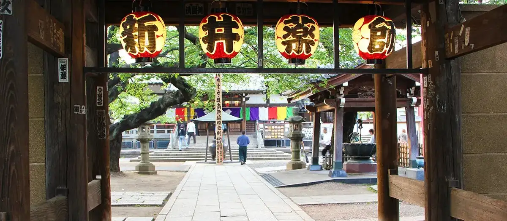

Nakano, Tokyo: things to do, food and stays
Nakano · Tokyo
Nakano
Highlighted on the Tokyo map.

Sights
Dining
L'AUTOMNE Nakano ten
ロートンヌ 中野店

Cafe in Nakano, Tokyo.
Ramen Go On
らぁめん ご恩

Noodle restaurant in Nakano, Tokyo.
Kashiwagi
かしわぎ

Noodle restaurant in Nakano, Tokyo.
Patisserie l’abricotier
パティスリー ラブリコチエ

Cafe in Nakano, Tokyo.
Mendokoro Kinari
メンドコロ キナリ

Noodle restaurant in Nakano, Tokyo.
Nakasuyatai Nagahama Ramen Shodai Kenta Toukyou kouenji hon ten
中洲屋台長浜ラーメン初代 健太 東京高円寺本店

Noodle restaurant in Nakano, Tokyo.
Miso Mendokoro Hanamichi An
味噌麺処 花道庵

Noodle restaurant in Nakano, Tokyo.
Ra Sutorada
ら すとらあだ

Noodle restaurant in Nakano, Tokyo.
Men Ya Sei Kokoro
麺や晴心

Noodle restaurant in Nakano, Tokyo.
Menya Hashimoto
麺屋 はし本

Noodle restaurant in Nakano, Tokyo.
Menya Taisei
麺家 たいせい

Noodle restaurant in Nakano, Tokyo.
Horumon Jinsei Taro Chan Reservation
ホルモン人生タロちゃん

Meat restaurant in Nakano, Tokyo.
Fukumen Hanaki
覆めん 花木

Noodle restaurant in Nakano, Tokyo.
Go Chome House
五丁目ハウス

Noodle restaurant in Nakano, Tokyo.
TOKYO RAMEN Kaika
TOKYO RAMEN かいか

Noodle restaurant in Nakano, Tokyo.
Tantan-men Hoozuki
担々麺 ほおずき

Noodle restaurant in Nakano, Tokyo.
MAROLOGA Bhavan
マロロガ バワン

Chinese or Asian restaurant in Nakano, Tokyo.
Tadaima Henshin Chuu
ただいま変身中

Noodle restaurant in Nakano, Tokyo.
Jukusei Tonkotsu Minowaya Nakano Honten Reservation
熟成豚骨 箕輪家 中野本店

Noodle restaurant in Nakano, Tokyo.
Kidouya
輝道家

Noodle restaurant in Nakano, Tokyo.
NAKANO Brick Reservation
NAKANO ブリック

Cafe in Nakano, Tokyo.
Menson RAGE Nakano Wantou
麺尊RAGE 中野 腕刀

Noodle restaurant in Nakano, Tokyo.
Sanuki no Udon Hana wa Saku Shin nakano honten Reservation
讃岐のおうどん 花は咲く 新中野本店

Noodle restaurant in Nakano, Tokyo.
Nogata Gyoza Honten Reservation
野方餃子 本店

Chinese or Asian restaurant in Nakano, Tokyo.
Ramen Musashiya Nakano honten
ラーメン 武蔵家 中野本店

Noodle restaurant in Nakano, Tokyo.
Menjiru Shokuzen Koujitsu
麺汁食膳 好日

Noodle restaurant in Nakano, Tokyo.
Raamen Kiiro
らぁめん 希いろ

Noodle restaurant in Nakano, Tokyo.
Yokohama Iekei Ramen Nidaime Budoka
横浜家系らーめん 二代目武道家

Noodle restaurant in Nakano, Tokyo.
Nakano Rengazaka Yoshokudo Budou
中野レンガ坂 洋食堂 葡萄

European restaurant in Nakano, Tokyo.
Motsuyaki Marumatsu
もつ焼き 丸松

Restaurant in Nakano, Tokyo.
Maguro Mart
マグロマート

Seafood restaurant in Nakano, Tokyo.
Daily Chico
デイリーチコ

Noodle restaurant in Nakano, Tokyo.
Akimoto Ya
秋元屋

Izakaya or bar in Nakano, Tokyo.
Taisho Ken Nakano
大勝軒 中野

Noodle restaurant in Nakano, Tokyo.
Nakano Kunichan Ramen
中野 邦ちゃんラーメン

Noodle restaurant in Nakano, Tokyo.
MORI YOSHIDA Toukyou ten
MORI YOSHIDA 東京店

Sweets and bakery shop in Nakano, Tokyo.